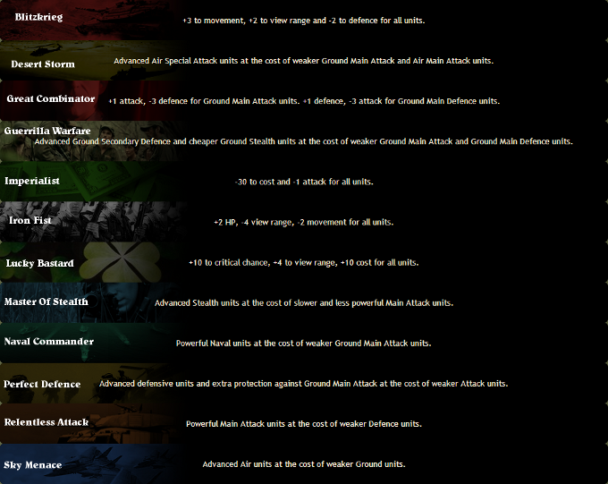

Tactics
atWar's basics are very easy to master. It's skills aren't.
There are many tactics you can use to be the best. Here are a few:
- Don't just attack. Anticipate the player's next move and defend accordingly.
- Use all available resources and assets. Boats, planes, truck transports, this can make the difference.
- Combined warfare is key. Use bombers, infantries, tanks, air and sea transports.
- Be unpredictable. Use distraction. Make sure the enemy won't see your next move coming, make use of this advantage.
- Always keep an eye on the siege stats. If your attack is higher than his defense, you're good.
It's hard to properly master and take advantage of these tactics.
Luckily, there are multiple strategies to help you with this.
